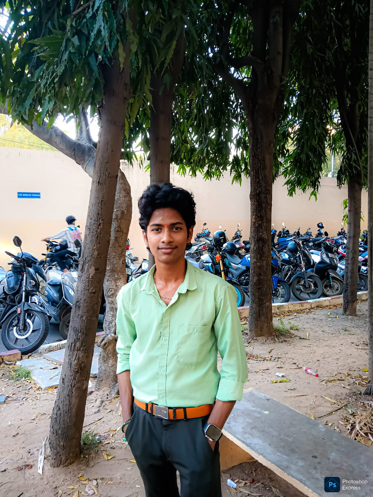

Aspiring Software Developer & Computer Science Student
Contact Me Download CV
I am a 2nd-year B.Sc. Computer Science student at Ramakrishna Mission Vivekananda College, Chennai.
I have a strong passion for problem-solving using Python and building interactive user interfaces with JavaScript and Web Development.
Recently, I completed a technical internship at CI GLOBAL TECHNOLOGIES. While working there, I gained experience with real-world data using Power BI and Python.
I am now looking for internship or entry-level opportunities in Software Development.where I can contribute, learn, and grow.
Building a strong foundation in programming, data structures, and algorithms.
Competed against students from all departments and won 3rd prize overall.
Topic: Artificial Intelligence & Generative AI.
Presented on the future of AI models and their impact on technology.
Specialized training in computer applications and software tools.
I designed and built a responsive website for my mother’s tailoring business to showcase her custom designs online.
The site includes a gallery of her work, service details, and a contact section.
This project taught me how to translate real-world requirements into code using a mobile-first approach,
and helped improve her business visibility.
Tech Stack: HTML, CSS, JavaScript
Key Features: Responsive design, image gallery, contact form, SEO-friendly
Future Improvements: Online booking system, payment integration
View Live Website
I built this portfolio from scratch to serve as a central hub for my skills and projects.
It features a modern dark-themed UI, smooth scrolling navigation, and interactive elements.
Unlike using a template, coding this manually helped me strengthen my understanding of CSS Flexbox and JavaScript DOM manipulation.
Tech Stack: HTML, CSS, JavaScript
Key Features: Typing animation, mobile-responsive menu, sticky navigation
View Source CodeInterested in working together? Feel free to reach out!